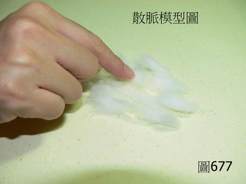

脈理醫理學 33.26：散脈
作者：陳建元
說明：
臨床先對虛脈體會一陣子之後（請參看第 33.7 條 虛脈），再來就有辦法去體會散脈，散脈是以虛脈為藍本，比虛脈更虛而無力、好像按著膨鬆棉絮，有如此之指感的，可以定義為「散脈」。〈圖677〉是散脈的模型，如按膨鬆棉絮者，為散脈的模型。【宜和虛脈的模型相比較，虛脈畢竟是壓按整塊的棉花，指感比較紮實，散脈則是壓按把棉花再拉鬆成膨鬆的棉絮團，故指感顯然比壓按棉花團更無空鬆而無著力感。】

本質和病機：
散脈主虛（各種陰陽氣血的虛損）而散渙不收斂。譬如氣虛的虛脈，如果再持續虛損下去的話，則脈象會逐漸空乏而無力，逐漸的轉成散脈；譬如陰虛日久或是陰陽兩虛日久，則逐漸先轉成微弱脈，而微弱脈再持續虛損下去的話，則脈象也是逐漸轉成散脈，所以散脈是各種陰陽氣血不足的最後轉歸，散脈比一般的陰陽氣血不足更嚴重，是一種正氣嚴重虛損後而正氣散渙、無法收斂收攝的脈象。
兼脈：
散澀夾瘀。浮散是正氣散渙不斂。沉散是正氣散渙不斂而偏虛寒。
散脈已經空如棉絮而不著力，所以其兼脈已經不容易察覺，頂多只是發現脈率不穩，也就是發現散澀脈，或浮散、沉散這些脈位上的差異而已，但是因為散脈是各種虛損脈象的最後轉歸，所以發現散脈的時候，我們由整個漫長的病理過程來推測，可以知道散脈除了虛損和正氣散渙不斂這些組成之外，必有兼夾不同程度的瘀、痰、毒三樣東西在內，這是對於散脈的認識，要先建立起來的概念。
六部散脈：
右寸散脈：為短氣、為氣喘不休、為多汗、為胸悶、為說話無力。
右關散脈：為腹脹腹悶、為消化不良。
右尺散脈：為瀉泄、為腰背膝蓋酸軟、為男子陽痿、為腎功能偏低、為水腫。
左寸散脈：為心悸、為胸悶胸痛、為短氣發喘。
左關散脈：為目澀、為筋骨酸軟無力。
左尺散脈：為頻尿、為膝腳酸軟、為腎功能偏低、為水腫。
治療藥物：
散脈是較嚴重的虛損，用一般補陽補陰補氣補血的方法不容易收效，除了選用歸入各經脈的補陽補陰補氣補血藥來補益之外，還要稍佐收斂藥與少量的解毒、活血、化痰藥才容易奏效，這是治療散脈的訣竅。
譬如要補益脾脈的散脈，那可以開乾薑3、附子3、麥門冬4、陳皮1、山查1、蒲公英1【後面的數字是藥物的比例】。
譬如要補益心脈的散脈，那可以開乾薑3、附子3、麥門冬4、遠志1、桃仁1、大青葉1【後面的數字是藥物的比例】。
【引用請先來信告知徵求同意，若有涉及販售營利等商業行為，版權所有拷貝盜用必究。】
【藥王脈學講壇】http://blog.xuite.net/drjychen/twblog